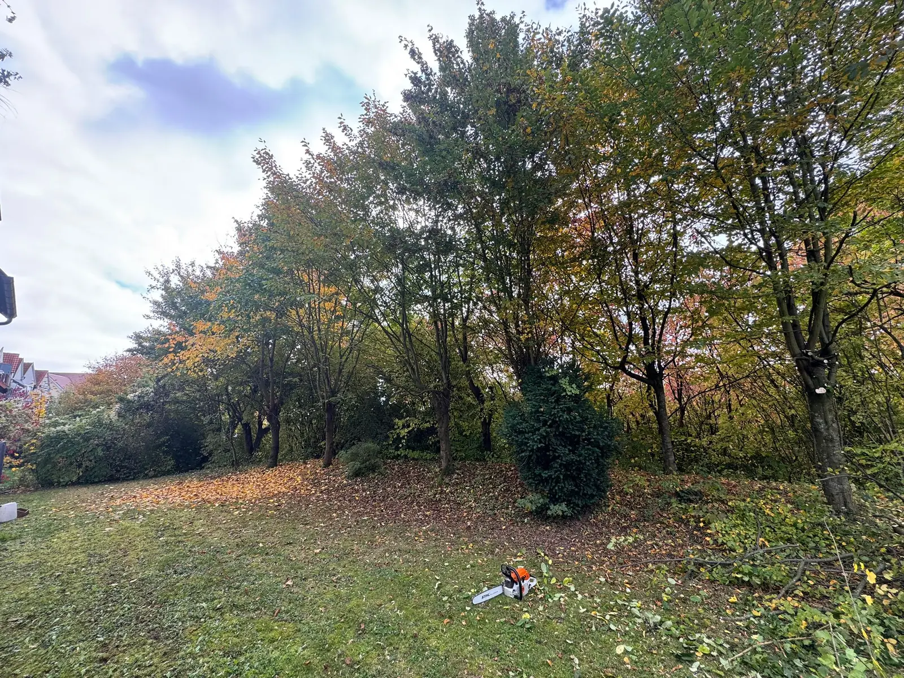
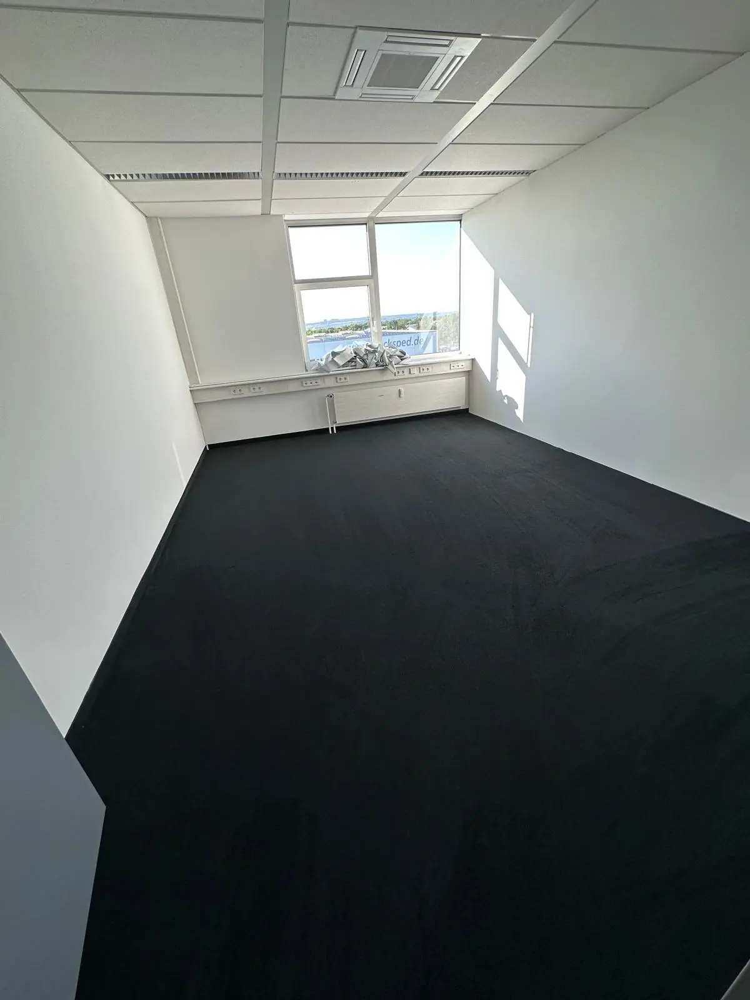

Hausmeisterservice
Zuverlässige Betreuung für Wohn- und Gewerbeobjekte im Raum Heilbronn: regelmäßige Kontrollen, Pflege, Koordination und schnelle Hilfe bei kleinen Anliegen.
Mehr erfahren
Hausmeisterservice Heilbronn und Umgebung
Professioneller Hausmeisterservice Oedheim und Heilbronn: Objektbetreuung, Gebäudereinigung, Gartenpflege, Winterdienst und Fensterreinigung für private, gewerbliche und verwaltete Immobilien.
Verlässlich rund ums Objekt
ALH Hausmeisterservice unterstuetzt Eigentümer, Hausverwaltungen, Praxen, Büros und Gewerbekunden mit klar abgestimmten Leistungen. Ob regelmäßige Treppenhausreinigung, Gartenpflege Heilbronn, Winterdienst Heilbronn oder laufende Objektbetreuung: Sie erhalten eine praktische Loesung, die zu Ihrem Objekt passt.
Zuverlässige Betreuung für Wohn- und Gewerbeobjekte im Raum Heilbronn: regelmäßige Kontrollen, Pflege, Koordination und schnelle Hilfe bei kleinen Anliegen.
Mehr erfahren
Saubere Eingangsbereiche, Flure, Sanitärbereiche und Nutzflaechen mit abgestimmten Reinigungsintervallen für gepflegte Immobilien.
Mehr erfahrenGruendliche Reinigung von Treppen, Geländern, Podesten, Briefkastenanlagen und Eingangsbereichen für einen starken ersten Eindruck.
Mehr erfahren
Diskrete, hygienische und planbare Reinigung von Arbeitsräumen, Wartebereichen, Behandlungszimmern und Nebenflaechen.
Mehr erfahrenRasenpflege, Heckenschnitt, Beetpflege, Laubentfernung und saisonale Pflege für Außenanlagen in Heilbronn und Umgebung.
Mehr erfahren
Verlässlicher Räum- und Streudienst in der kalten Jahreszeit für sichere Wege, Zufahrten und Eingangsbereiche.
Mehr erfahrenWir klären Zustand, Umfang und gewünschte Intervalle direkt am Objekt oder telefonisch.
Sie erhalten eine nachvollziehbare Empfehlung für Reinigung, Pflege oder Betreuung.
Die Arbeiten werden ordentlich, planbar und mit Blick für Details erledigt.
Warum ALH Hausmeisterservice?
Ein gutes Objekt wirkt gepflegt, sicher und ordentlich. ALH Hausmeisterservice arbeitet mit klaren Absprachen, kurzen Wegen und einem Blick für Details. So erhalten Kunden im Raum Heilbronn eine Betreuung, die zum Objekt passt und im Alltag entlastet.
Termine, Intervalle und Aufgaben werden verbindlich abgestimmt und sorgfältig umgesetzt.
Sie sprechen direkt mit ALH Hausmeisterservice statt mit einer anonymen Vermittlung.
Leistungsumfang und Aufwand werden nachvollziehbar besprochen, bevor die Arbeit beginnt.
Regelmäßige Betreuung oder einzelne Einsätze werden passend zum Objekt geplant.
Saubere Arbeitsweise, passende Ausrüstung und ein professioneller Blick für Details.
ALH Hausmeisterservice ist in Oedheim, Heilbronn und der Umgebung tätig.
FAQ
Antworten auf häufige Fragen zu Hausmeisterservice Heilbronn, Gebäudereinigung Oedheim, Gartenpflege, Winterdienst und Objektbetreuung.
ALH Hausmeisterservice ist in Oedheim, Heilbronn und der Umgebung tätig. Dazu gehören je nach Auftrag auch Orte wie Neckarsulm, Bad Friedrichshall und weitere Gemeinden im Raum Heilbronn.
Anfragen sind unter anderem für Hausmeisterservice, Gebäudereinigung, Treppenhausreinigung, Büro- und Praxisreinigung, Gartenpflege, Winterdienst, Fensterreinigung, PV-Anlagenreinigung, Entrümpelungen und Objektbetreuung möglich.
ALH Hausmeisterservice setzt auf direkten Kontakt. Nach Ihrer Anfrage meldet sich der persönliche Ansprechpartner zeitnah zurück, um Umfang, Termin und Objektanforderungen zu klären.
Ja. Neben einzelnen Einsätzen sind regelmäßige Intervalle für Reinigung, Gartenpflege, Winterdienst oder Objektbetreuung möglich. Der Umfang wird individuell abgestimmt.
Ja. Über die Kontaktseite können Sie eine Anfrage für Hausmeisterservice Heilbronn, Gebäudereinigung Heilbronn oder andere Leistungen senden. Das Formular öffnet eine vorbereitete E-Mail.
Rufen Sie an oder senden Sie eine Anfrage. ALH Hausmeisterservice meldet sich zeitnah zurück.
Kontakt aufnehmen